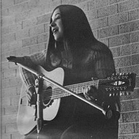

Gallery 1: Smith
This page will tell all about some prominent members of the Smith family.
Melanie Smith
About Melanie
Since she was born in the late 1970s, Melanie Smith has been an aspiring musician all her life alongside with her brother, Greg. The two have toured through the United States and even through a great deal of Europe. Melanie started playing the guitar aroudn the age of 12, but her singing is what really catches people's attention. Melanie and Greg still continue to play to this day.
Greg Smith

About Greg
Greg Smith, the older brother of Melanie Smith, has been a prodigy at the acoustic guitar since a young age. Greg has toured alone, with hired musicians, and alsongside his sister as a duo. Greg is a well-established musician that is widely known around local music scenes throughout the United States.